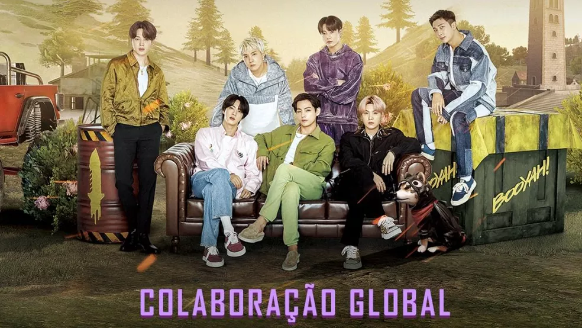

A parceria entre Free Fire (FF) e o grupo musical BTS começou em março de 2022. Com isso, jogadores de FF poderam aproveitar diversos conteúdos temáticos dentro e fora do game. Entre as opções estão skins, emotes, desafios e um programa de dois episódios que contará com a presença dos sete astros do k-pop. Além disso, banners e outros itens decorativos estarão espalhados pelos mapas do Battle Royale para celebrar a colaboração. O evento, que se chamará Gen FF, durou pouco mais de três semanas.

Os players terão de cumprir uma série de objetivos e missões ao longo do calendário. Como recompensa, jogadores receberão gemas BTS, que poderão ser trocados por trajes desenhados pelos próprios integrantes da banda: Jin, Suga, J-Hope, RM, Jimin, V e Jungkook. Cada cantor criou seu próprio design, totalizando sete skins.
Outras recompensas marcarão presença no evento: emotes, prancha, camiseta, mochila, token de música, tickets de ouro, tickets de diamante e rações de pet. A recomendação é logar diariamente no jogo e ficar de olho nas novidades para coletar o maior número de itens possíveis.
Os músicos sul-coreanos participarão de um programa especial chamado "Free Fire x BTS: O Show". Os dois episódios devem chegar na íntegra aos canais oficiais da Garena, como o YouTube. As datas ainda não foram divulgadas.
A minissérie terá atividades e discussões pautadas no universo do Battle Royale. Os astros até se enfrentarão em algumas quedas, como pôde ser visto no último teaser de divulgação da parceria. De acordo com a desenvolvedora, a colaboração entre Free Fire e BTS homenageia a geração de jogadores que cresceu e se desenvolveu junto ao game. Por isso o evento leva o nome de Gen FF.